L'Absent
Sword · unique · tfj_sword_18
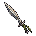

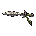
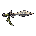
Garder largeur de lame, garde et pommeau distincts ; fixer le centre de prise après capture native.
Placement main : UNKNOWN · conversion : à faire152 aperçus de conception, agrandis ×2 sans lissage. Les 36 × 36 sont un choix de présentation, pas un format du moteur. Aucune vue n’est une capture d’équipement porté en jeu.
Instructions pour Claude · 38 fiches avec provenance et mesures
Sword · unique · tfj_sword_18



Garder largeur de lame, garde et pommeau distincts ; fixer le centre de prise après capture native.
Placement main : UNKNOWN · conversion : à faireStaff · unique · tfj_staff_08
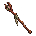
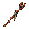

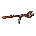
Conserver courbe ou fourche supérieure et matière du bois ; garder la hampe continue après réduction.
Placement main : UNKNOWN · conversion : à faireShield · unique · tfj_shield_16


Préserver contour asymétrique et emblème ; relever avant/arrière, poignée et occultation du bras.
Placement main : UNKNOWN · conversion : à faireKnife · legendary · tfj_knife_09
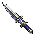
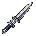
Garder la silhouette de lame courte et un seul détail distinctif lisible ; vérifier la garde contre les doigts.
Placement main : UNKNOWN · conversion : à faireKnife · unique · tfj_knife_10

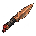
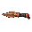
Garder la silhouette de lame courte et un seul détail distinctif lisible ; vérifier la garde contre les doigts.
Placement main : UNKNOWN · conversion : à faireNinjaBlade · legendary · tfj_ninja_blade_07


Distinguer pointe et courbure des katanas ; vérifier le passage de la lame devant et derrière la main.
Placement main : UNKNOWN · conversion : à faireNinjaBlade · unique · tfj_ninja_blade_08


Distinguer pointe et courbure des katanas ; vérifier le passage de la lame devant et derrière la main.
Placement main : UNKNOWN · conversion : à faireSword · legendary · tfj_sword_17
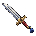

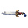
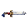
Garder largeur de lame, garde et pommeau distincts ; fixer le centre de prise après capture native.
Placement main : UNKNOWN · conversion : à faireKnightSword · legendary · tfj_knight_sword_05

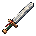
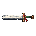

Préserver la masse et la pointe caractéristique sans agrandir depuis une limite supposée ; vérifier le corps derrière la lame.
Placement main : UNKNOWN · conversion : à faireKnightSword · unique · tfj_knight_sword_06


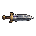
Préserver la masse et la pointe caractéristique sans agrandir depuis une limite supposée ; vérifier le corps derrière la lame.
Placement main : UNKNOWN · conversion : à faireKatana · legendary · tfj_katana_09


Conserver courbure et tsuba ; contrôler la continuité du fil aux angles requis.
Placement main : UNKNOWN · conversion : à faireKatana · unique · tfj_katana_10


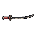
Conserver courbure et tsuba ; contrôler la continuité du fil aux angles requis.
Placement main : UNKNOWN · conversion : à faireAxe · legendary · tfj_axe_03


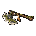

Préserver profil du fer et asymétrie tête/manche ; tester le centre de prise et les collisions visuelles.
Placement main : UNKNOWN · conversion : à faireAxe · unique · tfj_axe_04

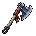


Préserver profil du fer et asymétrie tête/manche ; tester le centre de prise et les collisions visuelles.
Placement main : UNKNOWN · conversion : à faireStaff · legendary · tfj_staff_07
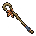


Conserver courbe ou fourche supérieure et matière du bois ; garder la hampe continue après réduction.
Placement main : UNKNOWN · conversion : à faireFlail · legendary · tfj_flail_03
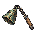
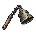


Séparer visuellement chaîne, poignée et poids ; cinématique de la chaîne UNKNOWN, ne pas figer une hypothèse comme animation native.
Placement main : UNKNOWN · conversion : à faireFlail · unique · tfj_flail_04
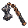
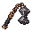


Séparer visuellement chaîne, poignée et poids ; cinématique de la chaîne UNKNOWN, ne pas figer une hypothèse comme animation native.
Placement main : UNKNOWN · conversion : à faireGun · legendary · tfj_gun_06


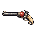
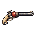
Préserver longueur du canon et profil de crosse ; vérifier direction du canon et contact de main sans supposer de recul.
Placement main : UNKNOWN · conversion : à faireGun · unique · tfj_gun_07
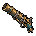
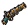


Préserver longueur du canon et profil de crosse ; vérifier direction du canon et contact de main sans supposer de recul.
Placement main : UNKNOWN · conversion : à faireCrossbow · legendary · tfj_crossbow_05


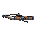
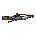
Garder arc transversal, stock et corde distincts ; vérifier prise, occultation et direction de tir.
Placement main : UNKNOWN · conversion : à faireRod · legendary · tfj_rod_07

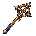


Préserver la tête caractéristique et le manche court ; toute lumière animée nécessite une couche démontrée.
Placement main : UNKNOWN · conversion : à faireRod · unique · tfj_rod_08

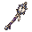
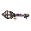

Préserver la tête caractéristique et le manche court ; toute lumière animée nécessite une couche démontrée.
Placement main : UNKNOWN · conversion : à faireCrossbow · unique · tfj_crossbow_06


Garder arc transversal, stock et corde distincts ; vérifier prise, occultation et direction de tir.
Placement main : UNKNOWN · conversion : à faireBow · legendary · tfj_bow_09


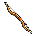
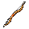
Garder une silhouette continue d’arc et une corde lisible ; vérifier mains et tension avant de dessiner la pose de tir.
Placement main : UNKNOWN · conversion : à faireBow · unique · tfj_bow_10

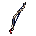


Garder une silhouette continue d’arc et une corde lisible ; vérifier mains et tension avant de dessiner la pose de tir.
Placement main : UNKNOWN · conversion : à faireInstrument · legendary · tfj_instrument_02
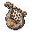

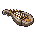

Garder caisse, bras et rythme de cordes lisibles ; pose de jeu et déplacement des mains UNKNOWN.
Placement main : UNKNOWN · conversion : à faireInstrument · unique · tfj_instrument_03

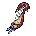


Garder caisse, bras et rythme de cordes lisibles ; pose de jeu et déplacement des mains UNKNOWN.
Placement main : UNKNOWN · conversion : à faireBook · legendary · tfj_book_03


Conserver volume, dos, fermoir et marque principale ; état ouvert ou fermé à relever dans une animation native.
Placement main : UNKNOWN · conversion : à faireBook · unique · tfj_book_04
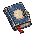

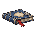

Conserver volume, dos, fermoir et marque principale ; état ouvert ou fermé à relever dans une animation native.
Placement main : UNKNOWN · conversion : à fairePolearm · legendary · tfj_polearm_07
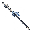
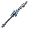


Préserver forme de pointe et longueur relative ; vérifier prise à deux mains, pointe et traversée du corps.
Placement main : UNKNOWN · conversion : à fairePolearm · unique · tfj_polearm_08
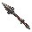

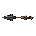

Préserver forme de pointe et longueur relative ; vérifier prise à deux mains, pointe et traversée du corps.
Placement main : UNKNOWN · conversion : à fairePole · legendary · tfj_pole_07


Différencier extrémités et bandes sans silhouette de lance ; vérifier prise et angles effectivement utilisés.
Placement main : UNKNOWN · conversion : à fairePole · unique · tfj_pole_08


Différencier extrémités et bandes sans silhouette de lance ; vérifier prise et angles effectivement utilisés.
Placement main : UNKNOWN · conversion : à faireBag · legendary · tfj_bag_03


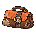
Conserver volume, anse et boucle ; mouvement souple et mode de frappe UNKNOWN.
Placement main : UNKNOWN · conversion : à faireBag · unique · tfj_bag_04
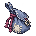


Conserver volume, anse et boucle ; mouvement souple et mode de frappe UNKNOWN.
Placement main : UNKNOWN · conversion : à faireCloth · legendary · tfj_cloth_02
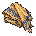


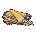
Préserver un tissu connecté et son bord distinctif ; déformation et pose de frappe UNKNOWN.
Placement main : UNKNOWN · conversion : à faireCloth · unique · tfj_cloth_03
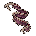

Préserver un tissu connecté et son bord distinctif ; déformation et pose de frappe UNKNOWN.
Placement main : UNKNOWN · conversion : à faireShield · legendary · tfj_shield_15

Préserver contour asymétrique et emblème ; relever avant/arrière, poignée et occultation du bras.
Placement main : UNKNOWN · conversion : à faireDécoupes vanilla suivant le lecteur historique et sa première palette. Pas de correspondance attribuée à un nouvel objet.
Ombrages simplifiés, mais halo résiduel : aucun remplacement de la version sélectionnée.